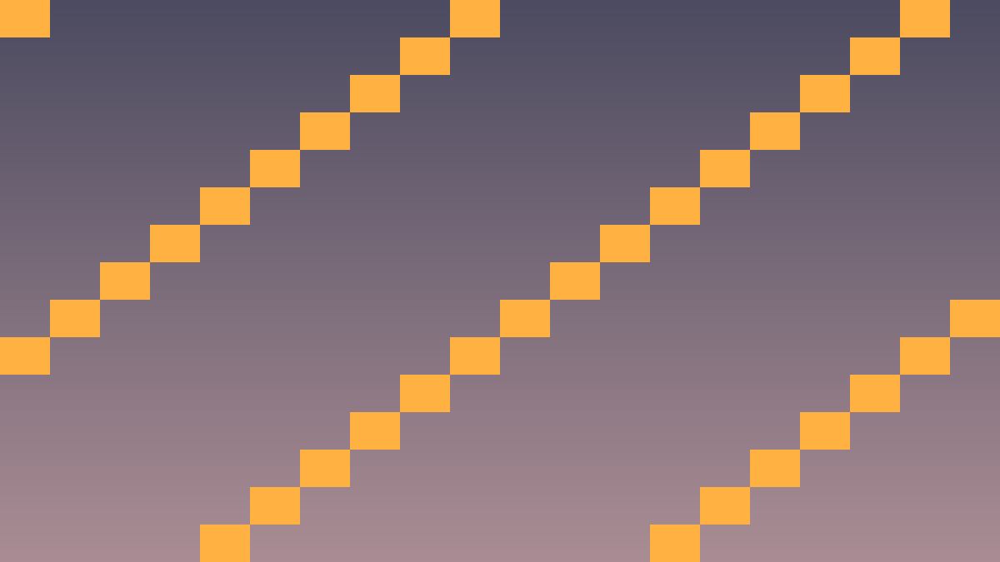
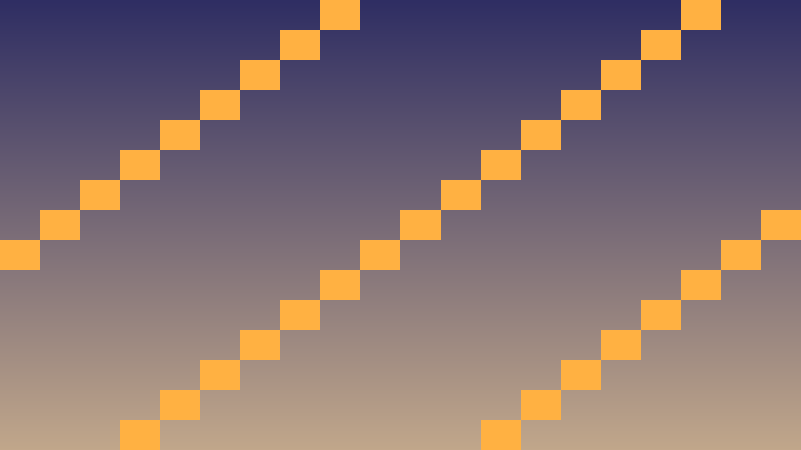
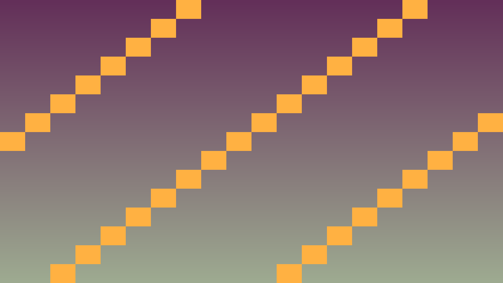

Tavs šīs stundas izaicinājums: Izveidot pilnvērtīgu 2D platformas spēli ar 3 līmeņiem, savācamiem un finiša bandieri.
Priekšzināšanu robeža: uzdevumos izmanto tikai iepriekš apgūto un šīs lapas teorijas/koda piemēros parādīto. Ja parādās jauna komanda vai rīks, vispirms atrod tās paraugu teorijas blokā.
Platformas spēle ar šādām funkcijām:
// Klašu hierarhija
class Player : public CharacterBody2D { ... };
class Enemy : public CharacterBody2D { /* patrol AI */ };
class Pickup : public Area2D { /* coin/gem/key */ };
class Level : public Node2D { /* satur visas iepriekšminētās */ };
class Game : public Node { /* level pārvaldība */ };Kritiskais fokuss: šajā stundā nepietiek tikai panākt redzamu efektu editorā. Jāspēj paskaidrot, kura C++ klase glabā stāvokli, kura metode to maina un kā Godot node struktūra šo kodu izmanto.
Pārbaudes pierādījums: spēlētājs, objekti un sadursmes darbojas ar C++ klasēm, kas lieto _physics_process, Input, CharacterBody2D, Area2D vai move_and_slide.
#include <godot_cpp/variant/string.hpp>
using namespace godot;
struct PhysicsCheckpoint {
String lesson = "2.6 Noslēguma projekts: Platformas spēle";
bool uses_cpp = true;
bool uses_physics_process = true;
bool uses_delta_time = true;
bool checks_collisions = true;
};70 min darba sadalījums: 1. uzdevums (~20 min) — izveido minimālo piemēru, kas pārbauda šīs stundas galveno ideju; 2. uzdevums (~25 min) — integrē risinājumu tēmas spēles projektā; 3. uzdevums (~25 min) — notestē robežgadījumus, salabo kļūdas un pieraksti secinājumu README vai komentārā. Tālāk redzamie soļi ir detalizēta karte šiem trim uzdevumiem; ja laiks beidzas, papildu pulēšanu atstāj nākamajai reizei.
Izpildi šo darba plānu, lai 2.6 Noslēguma projekts: Platformas spēle rezultāts būtu pārbaudāms C++ GDExtension projektā.
Node2D, CharacterBody2D, Area2D vai RigidBody2D..hpp failu ar klases deklarāciju..cpp failu ar metožu implementāciju.#include failus no godot_cpp.GDCLASS un tukšu vai vajadzīgu _bind_methods() metodi.register_types.cpp ar ClassDB::register_class._physics_process(double delta), nevis tikai manuālu pozīcijas maiņu editorā.delta, lai ātrums nebūtu atkarīgs no FPS.move_and_slide() vai move_and_collide() un pamato izvēli.UtilityFunctions::print pārbaudi, kas parāda svarīgu stāvokli spēles laikā.Pamata struktūra.
Savācamie objekti.
int score un bool has_key.get_tree()->call_group("hud", "refresh", score).Sarežģītība un struktūra.
load_next_level() pārslēdz scēnu ar get_tree()->change_scene_to_file().Pievieno spēles pastāvību.



class Game : public Node {
GDCLASS(Game, Node)
private:
int score = 0;
int current_level = 1;
public:
void load_next_level() {
current_level++;
if (current_level > 3) {
UtilityFunctions::print("Game complete! Score: ", score);
get_tree()->quit();
return;
}
String scene_path = "res://levels/Level" + String::num(current_level) + ".tscn";
get_tree()->change_scene_to_file(scene_path);
}
void add_score(int amount) { score += amount; }
};